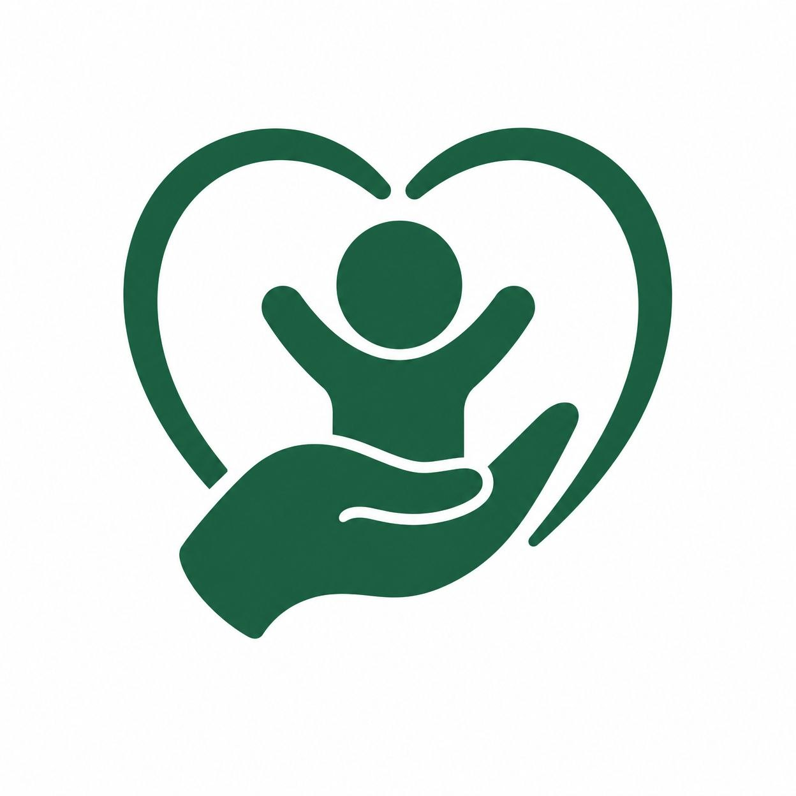

Rendez-vous de suivi
Les consultations régulières permettent de suivre le développement de l’enfant et de poser vos questions à une équipe de santé.
Le suivi pédiatrique accompagne la croissance et le bien-être de l’enfant. Un professionnel de santé peut répondre aux questions des familles et adapter les conseils à chaque âge.
Contacter CongoVital
Les consultations régulières permettent de suivre le développement de l’enfant et de poser vos questions à une équipe de santé.
Gardez le carnet de santé à portée de main et apportez-le aux rendez-vous pour faciliter le suivi et retrouver les informations importantes.
Pour l’alimentation, les vaccins ou un symptôme qui vous inquiète, demandez conseil à un professionnel plutôt que de donner un médicament sans avis adapté.
Un professionnel de santé pourra vous conseiller selon l’âge et la situation de votre enfant.
Nous contacter